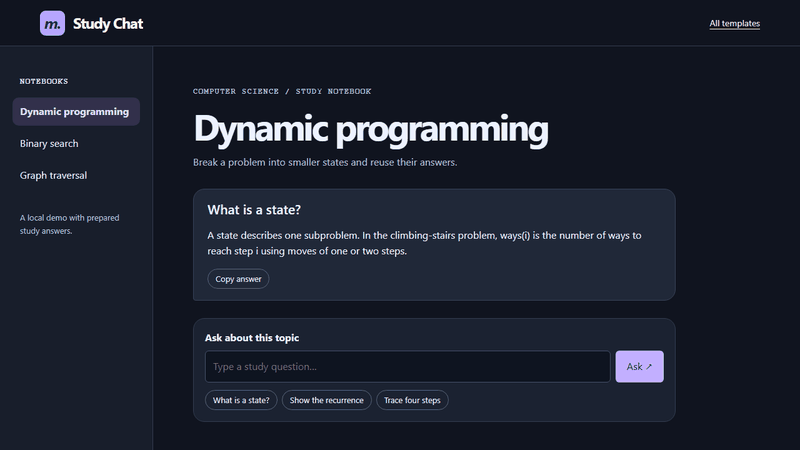
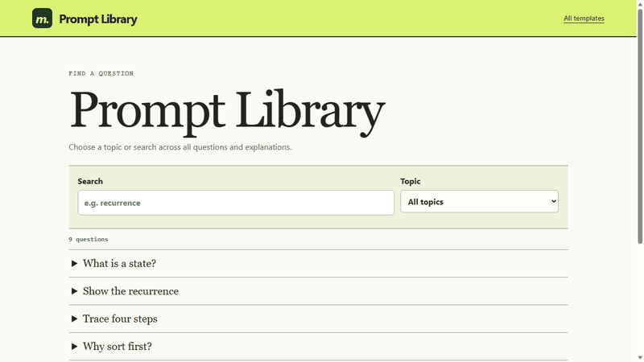
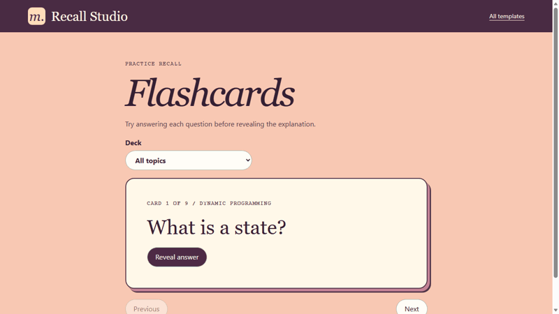
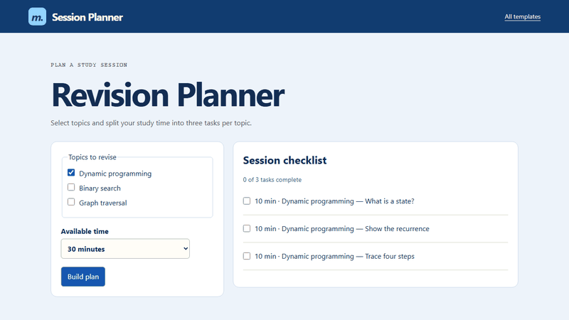

Web UI template collection
Pick a way to study.
Four AI interface templates for learning computer science. Each demo uses a local question bank.

AI Chat
Ask a suggested question and copy the explanation.
Open study chat ↗
AI Search
Search and filter study questions by topic.
Open prompt library ↗
AI Response Cards
Recall a concept, reveal the answer, and move through the deck.
Open flashcards ↗
AI Content Generator
Generate a timed checklist from the topics you want to practice.
Open revision planner ↗